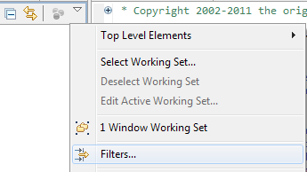

This lab will get you started with Spring Roo. In it, you will implement a simple domain model with a scaffolded web interface and some other functionality to see how easy it is to get up and running with Roo.
What you will learn:
How a Spring Roo application is set up
How to set up JPA and add some entities
How to set up Spring MVC and add scaffolded controllers and views
Estimated time to complete: 60 minutes
The instructions in this lab are divided into sections. In the first section you'll set up a new Spring Roo project and JPA persistency. In the next section you will add two entities with some constrained fields and a one-to-many association. In the third section you'll scaffold a web interface to perform CRUD operations on these entities. A final optional bonus section shows some ways to customize the generated interface.
When you open the 'roo' working set, you'll notice that there is only a solution project. That's because you will create the start project yourself.
Right-click on the 'roo' working set and choose "New -> Spring Roo Project". In the wizard that pops up, use 'rewardsonline' as both the Project name and the Top level package name. Check the "Add project to working sets" checkbox and choose the 'roo' Working set. Then click "Next" and "Finish" to create your project.
Notice that a Roo Shell View is automatically opened for your new project. When you want to enter a Roo command you can do it in this shell.
![[Note]](images/note.png) | Note |
|---|---|
Typing 'Ctrl+R' should open up a pop-up prompt that allows you to enter Roo commands as well, but this stopped working for the author of this lab in STS 2.7.1 on Windows. |
All Spring Roo 1.1.x projects use JPA 2 for persistency, but you'll have to tell Roo what provider and database you're using. Type 'hint' in the Roo shell to see instructions on how to do that, and then follow these instructions using "HIBERNATE" as the provider and "HYPERSONIC_IN_MEMORY" as the database. Remember to use Ctrl+Space (Cmd+Space on a Mac) to get code assist for completing commands and command arguments!
| Note |
|---|---|
The stand-alone Roo shell uses Tab for completion, but in STS the default Eclipse key bindings are used instead. |
Note the files that are added and updated to add JPA support to your project: this saves you a lot of tedious work in setting things up yourself.
You now have an empty project that uses Spring and JPA: the next step is to add some entities that model the domain of the application.
First type 'hint' again: Roo suggests that you add an entity using the 'entity' command.
Create an Account entity under the
rewardsonline.accounts package: you can do that by specifying the class
as ~accounts.Account (the '.' between the tilde and the package name is
optional). Also, follow the hint instructions and add an optional argument called
'testAutomatically'. To see optional arguments, first type '--' (two dashes) and then use
code assist.
Note the files that Roo creates for you: in addition to the
Account.java there are several .aj files and there's an integration
test with a so-called data on demand class created for you. The latter allows for easy
creation of test data.
Add two private String fields to the Account
class, name and number. You can either do this on
the Roo command line using the 'field string' commands, or directly in the Java editor:
When using the Roo shell, add a '--notNull' to the name field and
a '--unique' to the number. To use 'number' as a field name, you'll
also need to add the '--permitReservedWords' argument.
When using the Java editor directly instead, annotate the name field
with @NotNull and the number field with
@Column(unique=true) (make sure to import the
javax.persistence.Column type and not the one from
org.hibernate.annotations!).
When you're done, the Account class still looks fairly empty: just
some fields and annotations. That is because Roo places the supporting code it generates
for the @RooXxx annotations in hidden AspectJ files containing
inter-type declarations (ITDs). To see these files, click the small downwards-pointing
arrow in the Package Explorer View and choose "Filters...". Then deselect the "Hide
generated Spring Roo ITDs" element and press OK.
|  |
Have a look at the generated code: it reads almost like Java, but this code adds fields
and methods to the Account class during compilation. These files
are internal to Roo, so you should never edit them: instead, you can simply provide your
own implementation of some method or field and Roo will automatically remove the
corresponding ITD. You can try this by implementing your own
toString method in Account: as soon as you
save that change, Roo will remove the corresponding .aj file. This file will be restored
when you remove your method again, since the class still has the
@RooToString annotation. When you remove a @RooXxx annotation, the
corresponding code will no longer be generated for you.
Now create another entity in the same package called Beneficiary.
Add a non-null String field name and a
BigDecimal field savings with a decimal minimum
of 0. When you use the Roo command line for this, that requires the 'field number' command
and the '--decimalMin' argument; when using the Java editor, use the
@DecimalMin JSR-303 annotation.
By default Roo simply appends an 's' to an entity's name to come up with a plural form:
for "Beneficiary" that's wrong. Annotate the class with @RooPlural and
specify "Beneficiaries" as its value attribute. You must do this in the Java editor.
An account has 1 or more beneficiaries. To be able to work with such a relationship in a
Roo-generated web interface, you have to configure a bi-directional association: that
means that a Beneficiary must have an account
field and an Account must have a beneficiaries
field. Add these fields either using the Roo command line or in the Java editor:
In the Roo shell, use the 'field ref' command to add an account
field of type Account to the
Beneficiary class. Then use the 'focus' command to switch to
Account and use the 'field set' command to add a beneficiaries
field: specify a cardinality of ONE_TO_MANY!
Or use the Java editor to add the fields: annotate the account
field with @ManyToOne and the beneficiaries
field (which should be of type Set<Beneficiary>) with
@OneToMany(cascade=CascadeType.ALL).
With this setup you have finished a simple domain model that you can now generate a Web UI for.
So far, your project is a simple Java project that would produce a jar file when built. In this section you'll turn it into a web project with a Spring-MVC backed frontend that's created using Tiles and JSPs with custom tags: all technology that you learned about in the course so far.
Enter the 'web mvc setup' command to add support for Spring MVC to your application.
Notice the long list of files that's added and updated: this simple command has turned
your project into a web project (including Maven support for deploying to a local Tomcat
or Jetty instance using 'mvn tomcat:run' or 'mvn jetty:run'), added Spring-MVC to the
dependencies, configured a DispatcherServlet, added Tiles 2
configuration and a default layout including static resources, and added custom tags, a
resource bundle for I18N purposes and some default error pages.
Before you continue, browse through the configuration and generated files to see al the things that Roo has set up for you and to get a feel for how the application works. Most of what you see should be familiar from the earlier modules in the course.
To get up and running quickly, Roo supports the so-called scaffolding of views and controllers for your web application. This means that basic CRUD (Create-Read-Update-Delete) support for your entities will be provided by a generated user interface. Roo will continue to track changes to your entities and will update the views and controllers accordingly.
Use the 'web mvc all' command to scaffold a web UI with '~web' as the package to use for the generated classes.
You can now deploy the application to the local Tomcat instance and run it. Navigate to http://localhost:8080/rewardsonline to see what the scaffolded UI looks like. Create an Account and then create some Beneficiaries that you add to that Account. Notice how an Account is shown in the list when creating a new Beneficiary: you see a combination of its properties. Notice the same thing happens for beneficiaries when you look at an Account.
Also, notice how the 'notNull' constraints you specified earlier are reflected in the user interface: for not-null fields an extra message is shown, and client-side validation is active which also prevents you from submitting an invalid form.
Explore the user interface a bit more and then proceed with the next step.
The user interface that has been generated is not typically intended to be used as-is: it's just a quick way to get started, but you are still responsible for designing and implementing your web interface of course. One thing that's somewhat annoying is that accounts and beneficiaries are displyed using a combination of their attributes at the moment: it would make more sense to just show their names instead.
Spring Roo uses Spring Converter implementations for rendering entities as labels. These
converters are registered in a class called
ApplicationConversionServiceFactoryBean: please open that class
now. Notice that there are no converter definitions here: like with entities, this code
is woven in using an AspectJ ITD. Open the
ApplicationConversionServiceFactoryBean_Roo_ConversionService.aj
file and look at the static inner AccountConverter class that it
defines. You're going to add this converter to the .java file: an easy way to do that is
to use a built-in refactoring. Select the AccountConverter in the
.aj file, right-click and choose "AspectJ Refactoring -> Push In..." and press OK.
Then switch back to the ApplicationConversionServiceFactoryBean
and update the convert method to simply return the name of the
account.
Make sure to also add a registry.addConverter(new AccountConverter())
call to the installFormatters method, since Roo will remove
that line from the ITD after you push in the static converter class: without this call
the converter won't be used!
Repeat this push-in and edit procedure for the BeneficiaryConverter.
FIXME: doesn't currently work, AspectJ complains about empty body of
installLabelConverters.
![[Tip]](images/tip.png) | Tip |
|---|---|
If the push-in refactoring wizard doesn't show the BeneficiaryConverter after selecting it, then cancel and perform a Project -> Clean first. Sometimes the AspectJ plugin seems to get confused after the first push-in, cleaning the project will fix that. |
Restart the server and verify that your changes are reflected.
| Note |
|---|---|
Since we're using an in-memory database you'll have to enter a new account and new beneficiaries. |
It would be nice if you could add new beneficiaries to an account directly from the
account details page. This page is rendered by the
WEB-INF/views/accounts/show.jspx file. Open it and look at its
implementation: as you can see, custom tags are used to render the account details. This
ensures that changes to the entity will automatically be reflected in the user
interface. However, you're free to edit this file and add some contents.
Copy the <form:create> element and its content from the
views/beneficiaries/create.jspx file and paste it under the
<page:show> element in the account's
show.jspx file. Also copy the xmlns:form
attribute from the create.jspx root element to the root element of the show.jspx to
declare the tag library's namespace.
Notice that this tag requires a beneficiary model attribute for
binding. To ensure that that attribute exists, add the following method to the
AccountController:
@ModelAttribute
public Beneficiary newBeneficiary() {
return new Beneficiary();
}
Also, replace the <field:select> tag with the following tag,
since we know the account id for the new Beneficiary already:
<input type="hidden" name="account" value="${account.id}"/>
Restart the server, add a new Account and try to add a new Beneficiary to it from the account details view using your new form. It's not the perfect solution yet, but this gives you a pretty good idea of how Roo's custom tags help you to quickly customize the generated user interface, or to define new pages yourself while still allowing Roo to generate some of the dynamic contents for you.